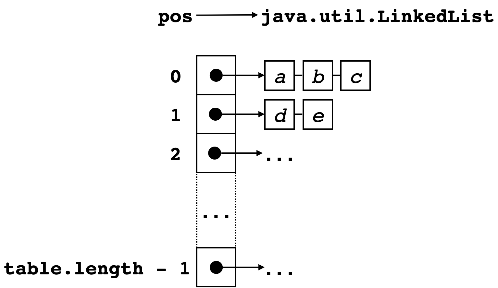

Última actualização: 25 de Maio de 2022.
Neste projecto pede-se o desenvolvimento de código concorrente para implementações de conjuntos baseadas em tabelas de dispersão (“hash sets”).
O projecto pode ser realizado individualmente ou em grupos de 2 alunos no máximo, devendo ser entregue até 12 de Junho. A forma de entrega será anunciada posteriormente mas contemplará:
É fornecido um arquivo ZIP com o código base para a realização do trabalho.
Para compilar o código deverá usar o script compile.sh:
./compile.shConsideramos implementações concorrentes de conjuntos que usam uma representação interna na forma de uma tabela de “hashing” com o típico esquema de “hashing” aberto, ilustrada na imagem abaixo, em que:
LinkedList não tem qualquer mecanismo de sincronização entre threads; ex no conjunto é dada por table[Math.abs(x.hashCode()) % table.length];
O interface IHSet em src/IHSet.java exprime um tipo abstracto de dados para os conjunto com as seguintes operações:
size(): devolve o tamanho do conjunto;add(e): adiciona o elemento e ao conjunto;remove(e): remove o elemento e do conjunto;contains(e): testa se o elemento e pertence ao conjunto;waitFor(e): retorna imediatamente se e pertencer ao conjunto, caso contrário espera que o elemento e seja adicionado ao conjunto, bloqueando a thread em contexto; erehash(): redimensiona a tabela de hashing.Para simplificar as implementações:
add(e), remove(e), contains(e), waitFor(e) lançam IllegalArgumentException quando e == null;rehash() em vez do usual esquema de redimensionamento automático.O interface IHSet define ainda variantes dos métodos add/contains/remove para executar as operações em causa para vários elementos. Estas são usadas apenas de forma auxiliar em código de teste.
Deverá usar o script test1.sh para validação básica das implementações pedidas abaixo no que toca às operações add(), remove() e contains()
$ # Argument: class name
$ ./test1.sh HSet0
Testing HSet0 ...
all seems ok :)… e o script test2.sh para validar as implementações de waitFor e rehash.
$ # Argument: class name
$ ./test2.sh HSet0
== Cooperari 0.4-SNAPSHOT - JUnit test execution - mode: preemptive ==
Testing HSet0 ...
SetTest2
testRehash1 [passed]
> trials: 100 time: 197 ms
testRehash2 [passed]
> trials: 100 time: 166 ms
testWaitFor1 [passed]
> trials: 100 time: 269 ms
testWaitFor2 [passed]
> trials: 100 time: 276 ms
testWaitFor3 [passed]
> trials: 100 time: 279 ms
== Summary ==
Executed: 5; Skipped: 0; Failed: 0; Execution time: 1222 msHSet0.javaO código já dado em HSet0 define uma implementação concorrente de um conjunto em que exclusão mútua é garantida usando blocos synchronized. Deverá usá-la como ponto de partida para a implementação concorrente das seguintes classes.
HSet1.javaHSet1 deve empregar um objecto ReentrantLock (→ documentação) em substituição de blocos synchronized. Além disso o esquema de notificações definido pelas chamadas a notifyAll() em add() e a wait em waitFor deverá ser substituído pelo uso de uma variável de condição do tipo Condition associada ao objecto ReentrantLock (criada via newCondition (→ documentação).
HSet2.javaObserve que contains e size não alteram um conjunto. HSet2 deverá empregar um objecto ReentrantReadWriteLock (→ documentação) em substituição de ReentrantLock, tal que add remove e rehash() adquiram o “lock” de escrita enquanto que contains e size só precisem do “lock” de leitura. Desta forma, operações de leitura podem proceder concorrentemente, enquanto as de escrita operam com exclusão mútua.
A operação waitFor deverá adquirir o lock de escrita, embora não modifique o conjunto. A espera baseada em condições deverá usar um objecto Condition criado sobre o “write lock” também usado por add para sinalizar a condição (“read locks” não suportam variáveis de condição de qualquer forma).
HSet3.javaEm vez de um “lock” global, considere um “lock” por entrada ou por conjunto de entradas na tabela de “hashing”, tal que uma thread só bloqueia se houver outra thread a aceder à mesma entrada da tabela ou a uma entrada da tabela governada pelo mesmo “lock”. Podemos então ter concorrência acrescida nas várias operações.
Aspectos de implementação:
No construtor, deve criar um array de objectos ReentrantReadWriteLock com a mesma dimensão (inicial) da tabela de “hashing”, e em associação um array de variáveis de condição (uma por lock).
Deverá considerar que o acesso à entrada para o elemento elem é governado pelo lock Math.abs(elem.hashCode() % N) onde N é o tamanho do array de locks. Na eventualidade de “rehashing”, o array de “locks” deverá manter-se inalterado, ao contrário da tabela em si cujo tamanho deverá crescer como nas implementações anteriores.
Remova na implementação o campo size para indicar o número de elementos no conjunto. O método para calcular o tamanho do conjunto, size(), deve somar o tamanho de todas as listas para determinar o tamanho do conjunto, adquirindo primeiro todos os “locks” de leitura e libertando-os depois da contagem.
De forma análoga, rehash() deverá adquirir todos os “locks” de escrita antes de proceder ao redimensionamento na tabela e libertá-los no fim.
HSet4.javaImplemente agora o conjunto usando a biblioteca ScalaSTM, armazenando os dados da forma já esquematizada em HSet4.java. Note que deverá percorrer e actualizar nós de uma lista duplamente ligada de forma explícita, em vez de usar objectos LinkedList (que não seriam adequados neste caso).
Nota: para comparar elementos guardados no conjunto deverá empregar como usual em Java o método equals() e não o operador ==.
O relatório deverá ser curto (2-4 páginas excluindo página de rosto, mas incluindo pequenos fragmentos de código se achar relevante), mas bem organizado, legível e claro. Deverá conter: